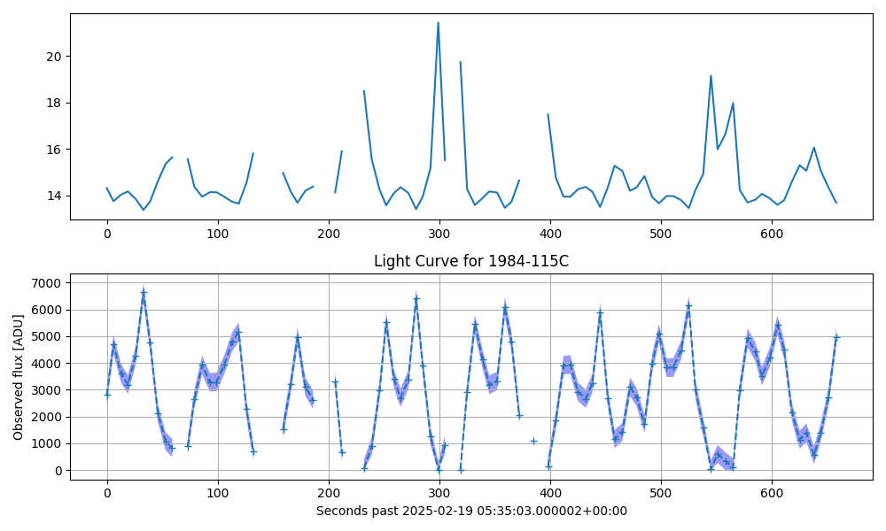
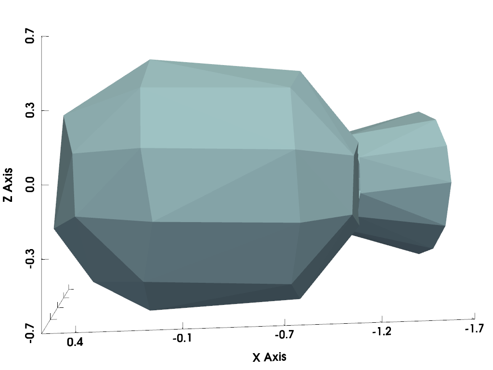

Note
Go to the end to download the full example code.
Inversion Cases#
Running the attitude inversion for the chosen cases.


shape: (100, 7)
┌───────────┬───────────────────┬──────────────┬──────────────────┬──────────────┬──────────┬────────┐
│ obs_index ┆ start_date_utc ┆ exp_time_us ┆ fits_file ┆ norad_cat_id ┆ flux_adu ┆ epsecs │
│ --- ┆ --- ┆ --- ┆ --- ┆ --- ┆ --- ┆ --- │
│ u32 ┆ datetime[μs, UTC] ┆ duration[μs] ┆ str ┆ i64 ┆ f64 ┆ f64 │
╞═══════════╪═══════════════════╪══════════════╪══════════════════╪══════════════╪══════════╪════════╡
│ 0 ┆ 2025-02-19 ┆ 5s ┆ 00013630.0_DELTA ┆ 15402 ┆ 2798.5 ┆ 0.0 │
│ ┆ 05:35:03.000002 ┆ ┆ _1_R_B_2__#154… ┆ ┆ ┆ │
│ ┆ UTC ┆ ┆ ┆ ┆ ┆ │
│ 1 ┆ 2025-02-19 ┆ 5s ┆ 00013631.0_DELTA ┆ 15402 ┆ 4687.0 ┆ 6.0 │
│ ┆ 05:35:09.000002 ┆ ┆ _1_R_B_2__#154… ┆ ┆ ┆ │
│ ┆ UTC ┆ ┆ ┆ ┆ ┆ │
│ 2 ┆ 2025-02-19 ┆ 5s ┆ 00013632.0_DELTA ┆ 15402 ┆ 3599.5 ┆ 13.0 │
│ ┆ 05:35:16.000002 ┆ ┆ _1_R_B_2__#154… ┆ ┆ ┆ │
│ ┆ UTC ┆ ┆ ┆ ┆ ┆ │
│ 3 ┆ 2025-02-19 ┆ 5s ┆ 00013633.0_DELTA ┆ 15402 ┆ 3189.0 ┆ 19.0 │
│ ┆ 05:35:22.000002 ┆ ┆ _1_R_B_2__#154… ┆ ┆ ┆ │
│ ┆ UTC ┆ ┆ ┆ ┆ ┆ │
│ 4 ┆ 2025-02-19 ┆ 5s ┆ 00013634.0_DELTA ┆ 15402 ┆ 4275.0 ┆ 26.0 │
│ ┆ 05:35:29.000002 ┆ ┆ _1_R_B_2__#154… ┆ ┆ ┆ │
│ ┆ UTC ┆ ┆ ┆ ┆ ┆ │
│ … ┆ … ┆ … ┆ … ┆ … ┆ … ┆ … │
│ 95 ┆ 2025-02-19 ┆ 5s ┆ 00013725.0_DELTA ┆ 15402 ┆ 1400.0 ┆ 631.0 │
│ ┆ 05:45:34.000002 ┆ ┆ _1_R_B_2__#154… ┆ ┆ ┆ │
│ ┆ UTC ┆ ┆ ┆ ┆ ┆ │
│ 96 ┆ 2025-02-19 ┆ 5s ┆ 00013726.0_DELTA ┆ 15402 ┆ 558.0 ┆ 638.0 │
│ ┆ 05:45:41.000002 ┆ ┆ _1_R_B_2__#154… ┆ ┆ ┆ │
│ ┆ UTC ┆ ┆ ┆ ┆ ┆ │
│ 97 ┆ 2025-02-19 ┆ 5s ┆ 00013727.0_DELTA ┆ 15402 ┆ 1396.5 ┆ 644.0 │
│ ┆ 05:45:47.000002 ┆ ┆ _1_R_B_2__#154… ┆ ┆ ┆ │
│ ┆ UTC ┆ ┆ ┆ ┆ ┆ │
│ 98 ┆ 2025-02-19 ┆ 5s ┆ 00013728.0_DELTA ┆ 15402 ┆ 2718.0 ┆ 651.0 │
│ ┆ 05:45:54.000002 ┆ ┆ _1_R_B_2__#154… ┆ ┆ ┆ │
│ ┆ UTC ┆ ┆ ┆ ┆ ┆ │
│ 99 ┆ 2025-02-19 ┆ 5s ┆ 00013729.0_DELTA ┆ 15402 ┆ 4968.5 ┆ 658.0 │
│ ┆ 05:46:01.000002 ┆ ┆ _1_R_B_2__#154… ┆ ┆ ┆ │
│ ┆ UTC ┆ ┆ ┆ ┆ ┆ │
└───────────┴───────────────────┴──────────────┴──────────────────┴──────────────┴──────────┴────────┘
16.2613092375 27.909147118749996
1.7162915181754899 1.7162915181754899
87752.33035026159
import sys
import matplotlib.pyplot as plt
import numpy as np
import polars as pl
import pyvista as pv
import mirage.vis as mrv
sys.path.append('/Users/liamrobinson/Documents/maintained-wip/taichi-polyclip')
sys.path.append('/Users/liamrobinson/Documents/maintained-wip/rhotater')
sys.path.append('/Users/liamrobinson/Documents/maintained-public/tibfgs')
import mirage as mr
# def run_inversion(
# input_path: str,
# output_path: str,
# n_particles: int,
# loss_function: str,
# self_shadowing: bool,
# sigma_i: float,
# ):
# state0 = np.array(df['state0'].to_list())[0, :]
# w0mag = np.linalg.norm(state0[3:6])
# q0 = rand_quaternions(n_particles)
# s0 = quat_to_mrp(q0)
# w0 = rand_points_in_ball(1.5 * w0mag, n_particles)
# iy = np.random.normal(state0[-2], sigma_i, size=n_particles)
# iz = np.random.normal(state0[-1], sigma_i, size=n_particles)
# x0 = np.vstack((s0.T, w0.T, iy, iz)).T
# sigma_obs = df['sigma_obs_norm'].to_numpy()
# lc_obs = df['flux_adu'].to_numpy()
# svi = np.array(df['svi'].to_list())
# epsecs = df['epsecs'].to_numpy()
# ovi = np.array(df['ovi'].to_list())
# obj_path = df['simple_model'][0]
# ti.init(
# arch=ti.cpu,
# cfg_optimization=False,
# opt_level=1,
# fast_math=False,
# advanced_optimization=False,
# unrolling_limit=0,
# )
# tic(f'Ran inversion with {n_particles} particles...')
# res = tater.direct_invert_attitude(
# svi,
# ovi,
# epsecs,
# lc_obs,
# x0,
# obj_file_path=obj_path,
# self_shadowing=self_shadowing,
# loss_function=loss_function,
# sigma_obs=sigma_obs,
# )
# res.write_parquet(output_path)
# ti.profiler.print_scoped_profiler_info()
# print(res)
# toc()
def main():
df = pl.read_parquet(
'/Users/liamrobinson/Documents/maintained-research/mirage/data/2025-02-19-DELTA_1_R_B_2-15402-00013630.parquet'
)
df = df.with_columns(
(pl.col('start_date_utc') - pl.col('start_date_utc').shift(1))
.dt.total_microseconds()
.fill_null(0)
.cum_sum()
.alias('epsecs')
/ 1e6
)
epsecs = df['epsecs'].to_numpy()
print(df)
ides = mr.satdef_from_identifier(df['norad_cat_id'][0]).ides
obj = mr.SpaceObject(
'/Users/liamrobinson/Documents/maintained-research/mirage/examples/15-attitude-sdc-2025/star37e.obj',
identifier=ides,
)
station = mr.Station()
dates = np.array(df['start_date_utc'].to_list())
integration_time_s = df['exp_time_us'][0].total_seconds()
# integration_time_s = 0.1
r_obj = obj.propagate(dates)
r_obs = station.j2000_at_dates(dates)
r_sun = mr.sun(dates)
R_ocross = mr.vecnorm(r_sun) / mr.AstroConstants.au_to_km
r = mr.vecnorm(r_obs - r_obj)
ovi = mr.hat(r_obs - r_obj)
# svi = mr.hat(r_sun - r_obj)
az, el = station.eci_to_az_el(dates, -ovi)
assert np.all(el > 0)
p = pv.Plotter()
mrv.render_spaceobject(p, obj)
p.show_bounds()
p.camera.up = (0, 0, 1)
p.camera.position = (0, 4, 0)
p.show()
m = 83.1 # empty mass, no propellant, kg
diam_m = 0.93
length_m = 1.69 # Approximated from the Star-37FM (https://space.skyrocket.de/doc_eng/star-37.htm)
r2 = diam_m / 2 # Radius of the outside of the shell
r1 = 0.9 * r2 # Radius of the inside of the shell
h = length_m # Length of the cylidrical shell approximation
itensor = np.diag(
[
1 / 2 * m * (r2**2 + r1**2),
1 / 12 * m * (3 * (r2**2 + r1**2) + h**2),
1 / 12 * m * (3 * (r2**2 + r1**2) + h**2),
]
)
print(itensor[0, 0], itensor[1, 1])
iy_over_ix = itensor[1, 1] / itensor[0, 0]
iz_over_ix = itensor[2, 2] / itensor[0, 0]
print(iy_over_ix, iz_over_ix)
lambdas = np.linspace(300, 1000, 100)
theta_z = mr.angle_between_vecs(-ovi, r_obs) # Zenith angle
Q = station.telescope.ccd.quantum_efficiency(lambdas)
T = mr.atmospheric_transmission(lambdas, theta_z, altitudes=station.alt_km)
I_odot = mr.sun_spectrum(lambdas)
inv_energy = lambdas / (
1e9
* mr.AstroConstants.planck_constant
* mr.AstroConstants.speed_of_light_vacuum
)
# norm brightness has units m^2
# m^2 / m^2 / AU^2 / (W / m^2 / nm)
norm_bright_to_mag = lambda x: mr.apparent_magnitude_in_band(
lambdas, I_odot / R_ocross**2 * x.reshape(-1, 1) / (r**2 * 1e6), band='V'
)
# plt.plot(lambdas, T[0,:], label='T')
# plt.plot(lambdas, Q, label='Q')
# plt.show()
# endd
integral_term = np.trapz(
Q * T * I_odot * inv_energy, lambdas
) # W / m^2 * (s^2 / kg / m^2) / photon * nm
outer_factor = (
station.telescope.aperture_area
* integration_time_s
/ (station.telescope.gain * R_ocross**2 * r**2 * 1e6)
) # 1e6 to convert r in km to m, overall units m^2 * s / (m^2) = s
normalized_brightness_to_counts = outer_factor.flatten() * integral_term.flatten()
print(normalized_brightness_to_counts[0])
# endd
lc_adu_obs = df['flux_adu'].to_numpy()
lc_norm_obs = lc_adu_obs / normalized_brightness_to_counts
# fwhm_pixel_widths = station.telescope.fwhm / station.telescope.ccd.pixel_scale
# fwhm_sigma = fwhm_pixel_widths / (2 * np.sqrt(2 * np.log(2))) # Pixels
# pixels_area = np.pi * (3 * fwhm_sigma) ** 2
pixels_area = 100
flat_field_k = 0.01
ccd_signal = mr.signal_spread(20, 3)
ccd_signal_vecnorm = mr.vecnorm(ccd_signal.flatten())
flat_field_noise_std = flat_field_k * ccd_signal_vecnorm * lc_adu_obs
sensor_read_noise_std = np.full_like(
epsecs, np.sqrt(pixels_area) * station.telescope.ccd.read_noise
) # Gaussian, in ADU
shot_noise_std = np.sqrt(lc_adu_obs / station.telescope.gain) # Poisson, in ADU
background_noise_std = np.sqrt(
station.sky_brightness(dates, -ovi, integration_time_s) * pixels_area
) # Poisson, in ADU
scintillation_noise_std = (
lc_adu_obs
* station.scintillation_noise_std(theta_z, integration_time_s).flatten()
) # Gaussian, in ADU
sigma_obs_counts = np.sqrt(
sensor_read_noise_std**2
+ shot_noise_std**2
+ background_noise_std**2
+ scintillation_noise_std**2
+ flat_field_noise_std**2
)
plt.figure(figsize=(10, 6))
plt.subplot(2, 1, 1)
plt.plot(df['epsecs'], norm_bright_to_mag(lc_norm_obs))
plt.subplot(2, 1, 2)
plt.plot(df['epsecs'], df['flux_adu'], '+--')
plt.fill_between(
epsecs,
np.clip(lc_adu_obs - 3 * sigma_obs_counts, 0, np.inf),
np.clip(lc_adu_obs + 3 * sigma_obs_counts, 0, np.inf),
alpha=0.4,
color='b',
edgecolor=None,
label='Estimated $3\sigma$ bounds',
)
plt.title(f'Light Curve for {ides}')
plt.xlabel(f'Seconds past {df["start_date_utc"][0]}')
plt.ylabel('Observed flux [ADU]')
plt.grid()
plt.tight_layout()
plt.show()
if __name__ == '__main__':
main()
Total running time of the script: (0 minutes 0.570 seconds)